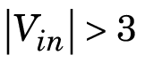

Measurement Computing PCI-PDISO16 Digital Input — PCI-PDISO16 Digital Input block (not recommended)MeasurementComputingDIBlocks
Simulink® Real-Time™ Library of Drivers No Longer Recommended for Use.
To open this library, type xpcmeasurementcomputinglib in the
Command Window.
|
I/O Module Input |
Block Output Data Type |
Scaling |
|---|---|---|
|
OPTO |
Double |
Low (opto off) = 0.0 High (opto on) = 1.0 |
The input is rectified before being applied to the opto isolator on the input.
Without an additional input current limiting resistor, the opto turns on when 
Enter numbers between 1 and 8 to select the digital input lines used with this port. This driver allows the selection of individual digital input lines in arbitrary order. The number of elements defines the number of digital lines used.
For example, to use all of the digital inputs, enter
[1,2,3,4,5,6,7,8]
Number the lines beginning with 1 even if this board manufacturer numbers the lines beginning with 0.
This vector controls the 5 ms noise filter. It is the same length as the channel vector. A value of 1 turns the filter on, and a value of 0 turns the filter off. If you specify a scalar, this value is replicated across the channel vector.
From the list choose either A or
B. The Port
parameter defines which port is used for this driver block. Each port
has a maximum of 8 digital inputs. More than one block can be connected
to the same port, but each channel can only be referenced by one block
at a time.
Enter the base sample time or a multiple of the base sample time
(-1 means sample time is inherited).
If only one board of this type is in the target computer, enter -1
to locate the board.
If two or more boards of this type are in the target computer, enter the bus number
and the PCI slot number of the board associated with this driver block. Use the format
[BusNumber,SlotNumber].
To determine the bus number and the PCI slot number, type:
tg = slrt; getPCIInfo(tg, 'installed')